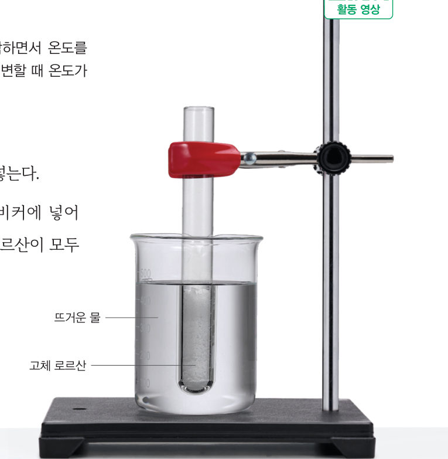
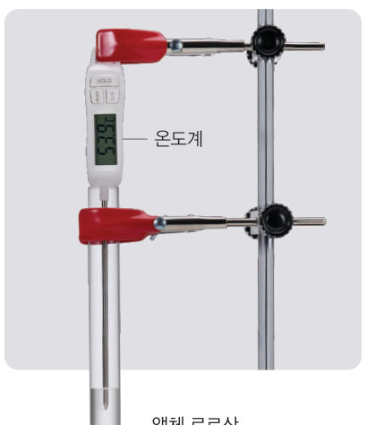

교과서에서는 30초마다 온도계를 읽었다. 이번에는 아두이노 온도 센서로 10초마다 자동 기록하여 더 촘촘한 냉각 곡선을 그리고, 로르산이 응고하는 동안 온도가 일정한지 확인하자.
준비물 아두이노 UNO, USB 케이블, LM35 온도 센서, 써미스터(10 kΩ)와 10 kΩ 저항(또는 아날로그 온도 센서 모듈), 브레드보드, 점퍼선, 얇은 랩(또는 열수축 튜브), 로르산, 시험관, 뜨거운 물(약 70 ℃)이 든 비커, 스탠드와 집게, 노트북(크롬), 보안경, 내열 장갑

| 처음 온도(℃) | 온도가 일정한 구간의 온도(℃) | 마지막 온도(℃) |
|---|---|---|
| 평가 항목 | 스스로 평가 |
|---|---|
| 센서를 방수하고 안전하게 측정했다. | |
| 냉각 곡선의 구간을 나누고 상태를 해석했다. | |
| 모둠원과 역할을 나누어 협력했다. |